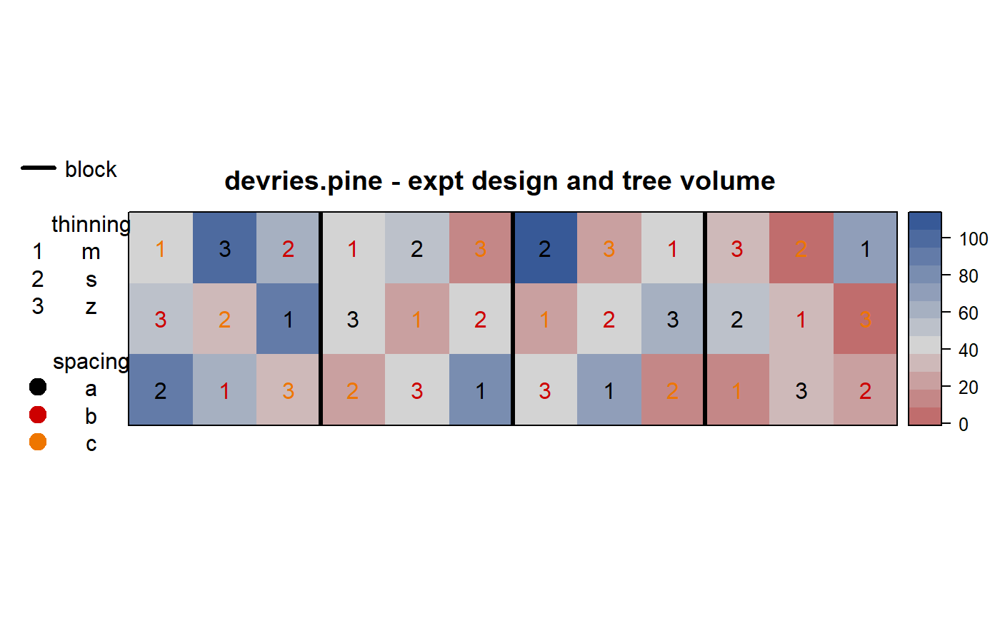
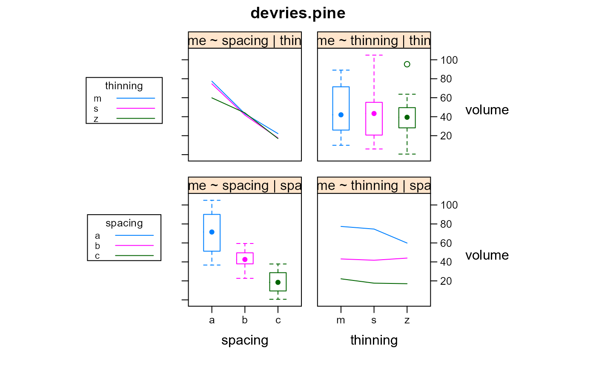

devries.pine.RdGraeco-Latin Square experiment in pine
data("devries.pine")
A data frame with 36 observations on the following 6 variables.
blockblock
rowrow
colcolumn
spacingspacing treatment
thinningthinning treatment
volumestem volume in m^3/ha
growthannual stem volume increment m^3/ha at age 11
Experiment conducted on Caribbean Pine at Coebiti in Surinam (Long 55 28 30 W, Lat 5 18 5 N). Land was cleared in Jan 1965 and planted May 1965. Each experimental plot was 60m x 60m. Roads 10 m wide run between the rows. Each block is thus 180m wide and 200m deep. Data were collected only on 40m x 40m plots in the center of each experimental unit. Plots were thinned in 1972 and 1975. The two treatment factors (spacing, thinning) were assigned in a Graeco-Latin Square design.
Spacing: A=2.5, B=3, C=3.5. Thinning: Z=low, M=medium, S=heavy.
Field width: 4 blocks x 180 m = 720 m
Field length: 1 block x 200 m = 200 m.
P.G. De Vries, J.W. Hildebrand, N.R. De Graaf. (1978). Analysis of 11 years growth of carribbean pine in a replicated Graeco-Latin square spacing-thinning experiment in Surinam. Page 46, 51. http://edepot.wur.nl/287590
None
# \dontrun{ library(agridat) data(devries.pine) dat <- devries.pine libs(desplot) desplot(dat, volume ~ col*row, main="devries.pine - expt design and tree volume", col=spacing, num=thinning, cex=1, out1=block, aspect=200/720)# ANOVA matches appendix 5 of DeVries m1 <- aov(volume ~ block + spacing + thinning + block:factor(row) + block:factor(col), data=dat) anova(m1)#> Analysis of Variance Table #> #> Response: volume #> Df Sum Sq Mean Sq F value Pr(>F) #> block 3 5191.8 1730.6 20.4218 5.249e-05 *** #> spacing 2 16063.7 8031.9 94.7790 4.453e-08 *** #> thinning 2 320.3 160.1 1.8896 0.1935 #> block:factor(row) 8 945.0 118.1 1.3939 0.2913 #> block:factor(col) 8 784.7 98.1 1.1575 0.3953 #> Residuals 12 1016.9 84.7 #> --- #> Signif. codes: 0 '***' 0.001 '**' 0.01 '*' 0.05 '.' 0.1 ' ' 1# }